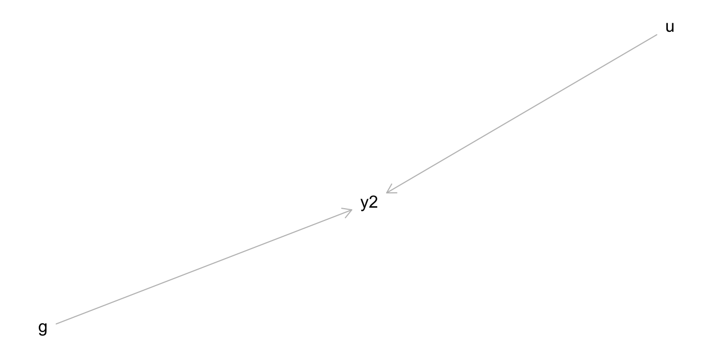
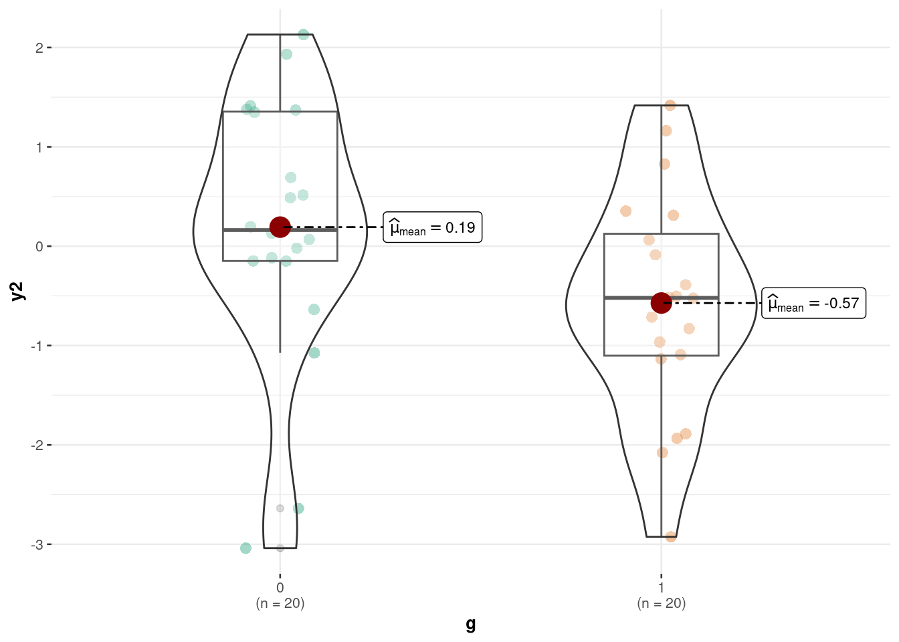
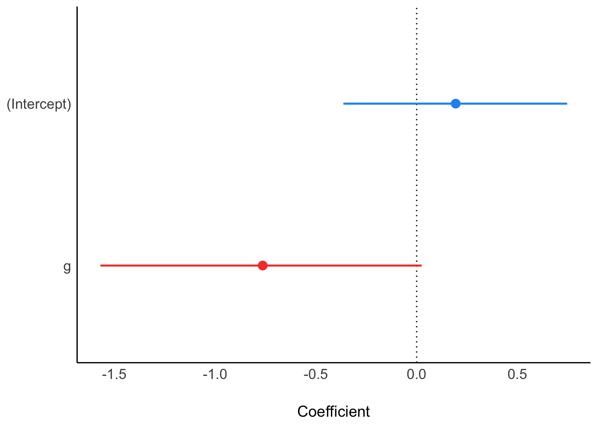
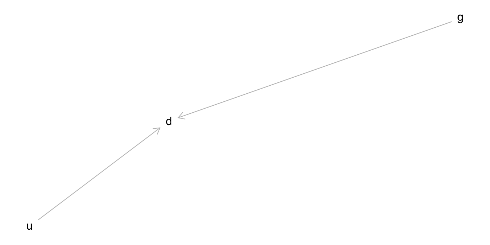
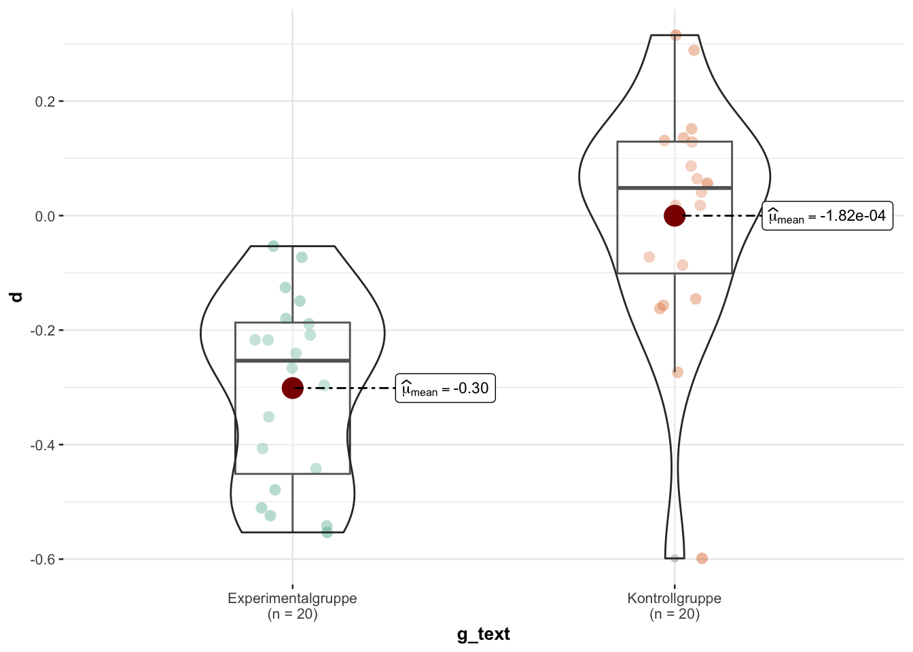
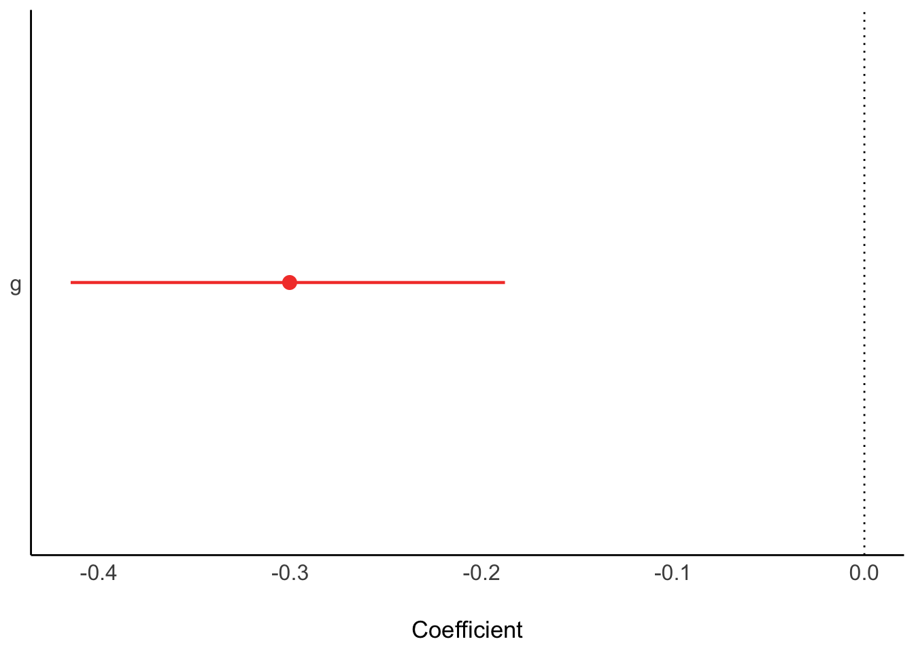
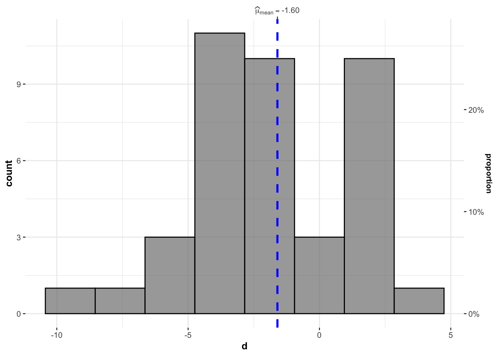
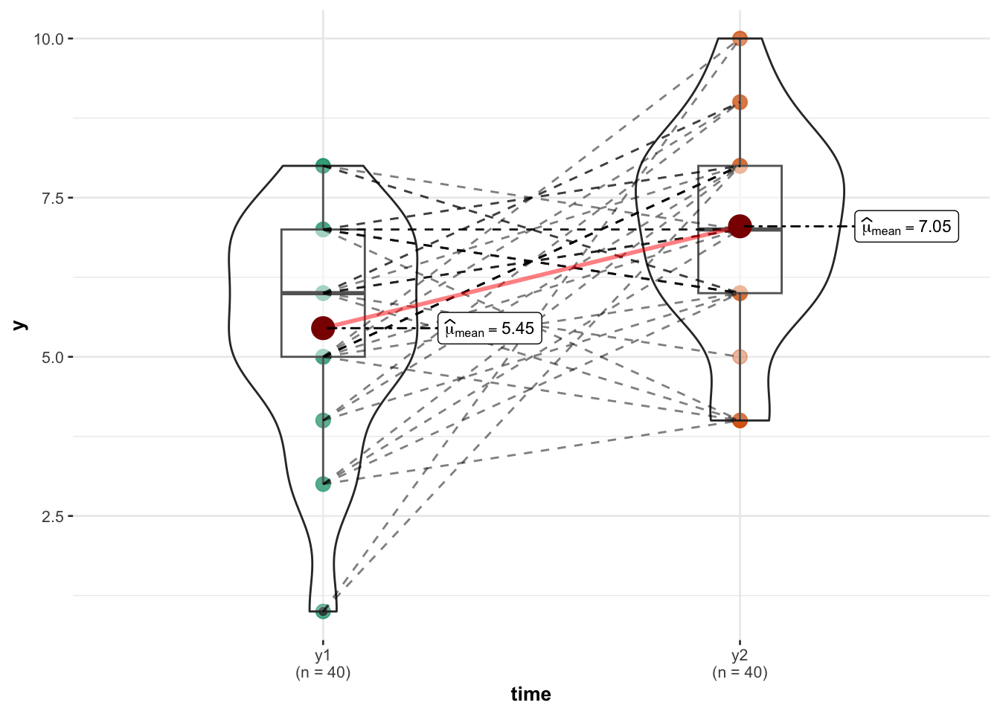
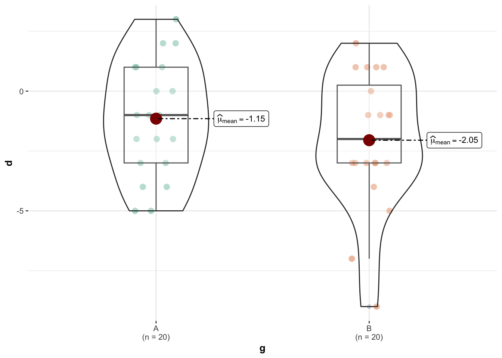
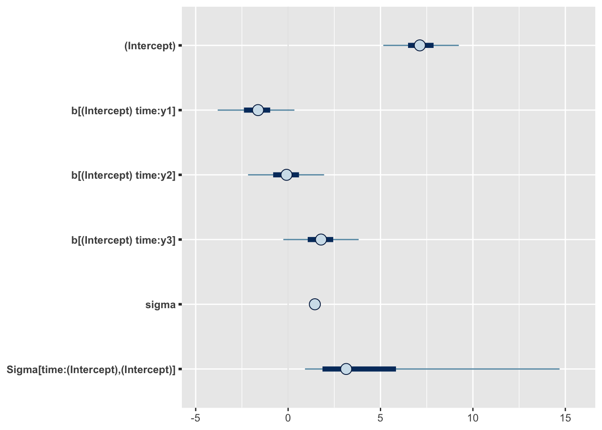

11 Auswerten: Modellieren
11.1 Lernsteuerung
11.1.1 Lernziele
- Sie können die Modellformel Ihrer Forschungsfrage nennen.
- Sie können Ihre Modellformel (korrekt) in R spezifizieren.
- Sie können Ihr Modell in R berechnen und die Ausgabe interpretieren.
- Sie können die Gültigkeit bzw. die Grenzen der Aussagen Ihres Modells einschätzen.
11.1.2 Benötigte R-Pakete
11.1.3 Position im Lernpfad
Sie befinden sich im Abschnitt “Auswerten” in Abbildung 1.2.
11.2 Metrische AV, between-Design
11.2.1 1 between-Variable
11.2.1.1 Design
Sauer und Lustig (2023) untersuchten in einer Querschnittsstudie den Effekt des Wirkstoff Bringnixtin auf die fluide Intelligenz. Die Autoren nahmen an, dass der Wirkstoff den individuellen Wert der abhängigen Variable erhöhen würde.
Der Ablauf (aus Sicht der Probandis) ist in Abbildung 11.1 dargestellt. Intro fasst die Begrüßung der Probandis inkl. Informed Consent sowie Erfassung von soziodemografischen Variablen zusammen. g.0 und g.1 sind die zwei Stufen der UV (g wie Gruppe), wobei g.0 die Kontrollgruppe kodiert (Placebo, also Zuckerpille, kein Wirkstoff,) und g.1 die zweite Stufe, d.h. die Experimentalgruppe (hohe Dosis Bringtnixtin). y2 ist die Messung der AV (d.h. nach Gabe von Bringtnixtin), d.h. ein Maß der fluiden Intelligenz. outro meint die Verabschiedung der Probanden sowie einige Fragen zu Compliance.
Die Hypothese lautet: \(\mu_{g.2} > \mu_{g.1}\). In Worten:
Wir erwarten, dass der Mittelwert der Experimentalgruppe höher ist als der Mittelwert der Kontrollgruppe.
flowchart LR Intro --> g.0 Intro --> g.1 g.0 --> y2 g.1 --> y2 y2 --> outro
Der DAG des Experiments ist in Abbildung 11.2 dargestellt.

Die Daten dieses Experiments sind hier zu beziehen:
d_bringtnixtin_path <- "https://raw.githubusercontent.com/sebastiansauer/fopra/main/data/d_bringtnixtin.csv"
d_bringtnixtin <- read_csv(d_bringtnixtin_path)Die Autoren der Studie geben an, dass die Daten in z-Einheiten skaliert sind.
11.2.1.2 Deskriptive Analyse
Die deskiptiven Kennwerte sind in Abbildung 11.3 dargestellt. Das sieht nicht gerade nach einem großen Effekt aus …1
ggbetweenstats(
data = d_bringtnixtin,
x = g,
y = y2,
results.subtitle = FALSE # keine Statistiken zeigen
)
11.2.1.3 Modellierung
Wir berechnen ein lineares Modell mit der Modellformel y2 ~ g. Die Ergebnisse sind in Tabelle 11.1 zu sehen.
m_bringtnixtin <- stan_glm(y2 ~ g, data = d_bringtnixtin, refresh = 0)
parameters(m_bringtnixtin)Parameter des Modells m_bringtnixtin
Die Punkt- und Intervallschätzer (95%-ETI) sind in Abbildung 11.4 dargestellt.

m_bringtnixtinDer Gruppenunterschied wird auf 0.19, -0.76 geschätzt; das ist der Punktschätzer der UV g. Die Grenzen eines 95%-CI für die UV liegen bei -1.55 bzw. 0.04. Dieser Bereich enthält die Null, vgl. Abbildung 11.4. Daher kann nicht ausgeschlossen werden, dass Bringtnixtin nix bringt.
👨🏫 Frau Professor Lustig, wie kann das sein, dass sich die Hypothese nicht bestätigt?
👩🏫 Herr Professor Sauer, auch ein negatives Ergebnis bringt die Wissenschaft weiter.
Testen wir eine Nullhypothese mit dem ROPE-Verfahren, s. Tabelle 11.2 und Abbildung 11.5.
rope(m_bringtnixtin)ROPE für Modell m_bringtnixtin
Da sich das 95%-CI mit dem ROPE überlappt, kann die Nullhypothese bzw. das ROPE (kein praktisch bedeutsamer Effekt) nicht ausgeschlossen werden.
Eine vergleichbare Information bietet uns die Kennzahl pd, s. Tabelle 11.1. Der Wert für g liegt bei ca. 0.97.
pd gibt die Wahrscheinlichkeit (laut Modell) an, dass der Effekt in der Population negativ bzw. positiv ist (d.h. gleich dem Vorzeichen des Punktschätzers; in diesem Fall negativ).\(\square\)
Das Modell ist sicher ziemlich sicher, dass der Effekt von g (in der Population) negativ ist.
👨🏫 Frau Professor Lustig, oh je!
👩🏫 Herr Professor Sauer, wir müssen erst einmal in Ruhe die Studie replizieren. Eine Schwalbe macht noch keinen Frühling.
11.2.2 Vorher-Nachher-Messung, 1 between-Variable
11.2.2.1 Design
Sauer und Lustig (2023) fiel auf, dass es sinnvoller ist, zuerst die AV mittels eines Vortests zu messen, dann die Intervention anzuwenden, und dann nachher (Posttest) die AV wieder zu messen. Daher haben sie sowohl vor der Intervention (y1) als auch nach der Intervention (Gabe von Bringtnixtin), y2 die AV gemesessen.
Eine Vorher-Nachher-Messung hat den Verteil, dass sie - im Gegensatz zur Nur-Nachher-Messung - unterschiedliche Ausgangswerte in der AV herausrechnet. Bei großen Gruppen wird sich bei einer randomisierten Zuweisung zu den Gruppen der Ausgangswert der AV angleichen. Bei nicht so großen Gruppen kann aber auch bei Randomisierung ein - mitunter erheblicher - Unterschied zwischen den Gruppen verbleiben. Findet man bei der Post-Messung einen Effekt, so kann es sein, dass dieser nicht auf die Intervention beruht, sondern auf die von vornherein vorhandenen Unterschieden zwischen den Gruppen.\(\square\)
Vergleicht man die Delta-Werte zwischen zwei Gruppen, berechnet man die Differenz zwischen den Gruppen der Delta-Werte. Man spricht daher von einer Difference-in-Difference-Analyse.\(\square\)
Abbildung 11.6 zeigt den Ablaufplan dieses Experiments.
flowchart LR Intro --> y1 y1 --> g.1 y1 --> g.2 g.1 --> y2 g.2 --> y2 y2 --> outro
DAG des Experiments ist in Abbildung 11.7 dargestellt.

11.2.2.2 Deskriptive Analyse
Eine einfache (und sinnvolle) Art, solche Studiendesigns auszuwerten ist die Bildung einer Differenz-Variable2. Diese Differenzvariable gibt die Veränderung der fluiden Intelligenz durch die Intervention an. Anders gesagt: Die Differenz ist die IQ-Wert einer Person nach der Intervention minus dem IQ-Wert vor der Intervention: \(d = y_2 - y_1\):
Schauen wir uns die ersten paar d-Werte für jede der beiden Gruppen (g=0? bzw.g=1`) an.
d_bringtnixtin %>%
group_by(g) %>%
slice_head(n = 5)Vielleicht ist es anschaulicher, wenn wir die Gruppe 0 in den Text Kontrollgruppe umbenennen und 1 in Experimentalgruppe:
Hier sind die Mittelwerte für jede der beiden Gruppen:
Die deskiptiven Kennwerte sind in Abbildung 11.8 dargestellt.
ggbetweenstats(
data = d_bringtnixtin,
x = g_text,
y = d,
results.subtitle = FALSE # keine Statistiken zeigen
)
11.2.2.3 Modellierung
Wir modellieren (in m_bringtnixtin2) jetzt die Veränderung d = y2 - y1 als AV; UV ist wieder g.
m_bringtnixtin2 <- stan_glm(d ~ g, data = d_bringtnixtin, refresh = 0)
parameters(m_bringtnixtin2)Abbildung 11.9 zeigt die Parameterwerte für m_bringtnixtin2,
plot(parameters(m_bringtnixtin2))
Wie man den Parameterwerten entnehmen kann, ist sich das Modell sehr sicher, dass der Effekt von Bringtnixtin negativ ist.
11.2.3 Weitere Beispiele
Gängige Forschungsfragen dieser Art sind hier erläutert.
11.3 Metrische AV, within-Design
11.3.1 1 within-Variable
Eine Studie mit Vorher-Nachher-Messung setzt ein Within-Design um.
Beispiel 11.1 (Statisches Diagramm vs. animiertes Diagramm) Ein Forschungsteam untersuch den Effekt der UV Diagrammart D (mit den zwei Stufen D.1 animiert und D.2 statisch) auf die Behaltensleistung (y) von Probanden. Nach jeder Bedingung wird die Behaltensleistung gemessen (anhand von 10 Wissensfragen, die jeweils als “richtig” oder “falsch” bewertet wurden), mit y1 nach D.1 und y2 für D.2.
11.3.1.1 Design
Forschungsfrage:
Hat die Diagrammart einen Einfluss auf die Behaltensleistung? Anders gesagt: Unterscheiden sich die Diagrammarten in ihrem Einfluss auf die Behaltensleistung?
Die zugehörige Hypothese kann man so formulieren: \(d \ne 0\), wobei \(d = y_1 - y_2\).
Die Modellformel lautet: d ~ 1, das ist ein Interceptmodell, also ein Modell ohne Prädiktor. Uns interessiert, ob die Variable d im Mittelwert ungleich Null ist.
flowchart LR D.1 --> y1 --> D.2 --> y2
11.3.1.2 Deskriptive Analyse
Hier sind einige Spieldaten:
d_within <-
read_csv("https://raw.githubusercontent.com/sebastiansauer/Lehre/main/data/withindesign.csv") %>%
select(-c(y3, g)) # diese beiden Variablen ignorieren wir für den Augenblick
head(d_within)Wir berechnen d:
gghistostats(d_within,
x = d,
results.subtitle = FALSE # verzichte auf zusätzliche Statistiken
)
Da d im Mittel negativ ist, ist der Mittelwert von y2 höher als der von y1.
d_within %>%
describe_distribution(d)Um die Daten noch anders visualisieren zu können, formen wir sie ins “lange Format” um.
d_long <-
d_within %>%
pivot_longer(cols = c(y1, y2), names_to = "time", values_to = "y")
head(d_long)Visualisieren wir uns die Daten:
ggwithinstats(
data = d_long,
x = time,
y = y,
results.subtitle = FALSE # verzichte auf zusätzliche Statistiken
)
11.3.1.3 Inferenzanalyse
Wir berechnen das Modell:
m_within <- stan_glm(d ~ 1, data = d_within, refresh = 0)
parameters(m_within)Hier ist eine Visualisierung des 95%-ETI des Unterschieds (d) zwischen den Bedingungen:
11.3.2 1 within-Variable, 1 between-Variable
Hat die Diagrammart einen Einfluss auf die Behaltensleistung? Anders gesagt: Unterscheiden sich die Diagrammarten in ihrem Einfluss auf die Behaltensleistung? Dabei kontrollieren wir die Reihenfolge.
Die zugehörige Hypothese kann man so formulieren: \(d \ne 0\), wobei \(d = y_1 - y_2\).
Die Modellformel lautet: d ~ 1 + g. Das kann man synonym so schreiben: d ~ g. Uns interessiert, ob die Variable d im Mittelwert ungleich Null ist.
flowchart LR
subgraph g2
direction LR
D.1 --> y1 --> D.2 --> y2
end
subgraph g1
direction LR
D2[D.2] --> y22[y2] --> D1[D.1] --> y11[y1]
end
11.3.2.1 Deskriptive Analyse
Hier sind einige Spieldaten:
d_within <-
read_csv("https://raw.githubusercontent.com/sebastiansauer/Lehre/main/data/withindesign.csv") %>%
select(-c(y3)) # die Variable `y3` ignorieren wir für den Augenblick
head(d_within)Wir berechnen d:
ggbetweenstats(
d_within,
x = g,
y = d,
results.subtitle = FALSE
)
Es gibt einen gewissen Unterschied zwischen den Bedingungen; die Reihenfolge könnte einen Einfluss haben. Aber wir müssen inferenzstatistisch prüfen, wie groß der Einfluss ist.
11.3.2.2 Inferenzanalyse
m_within2 <- stan_glm(d ~ g, data = d_within, refresh = 0)
parameters(m_within2)Das CI für die Reihenfolge (Variable gB) beinhaltet die Null nicht; der Koeffizient pd gibt knapp 90% Wahrscheinlichkeit für einen (negativen Effekt) an. Damit haben wir einige Evidenz für einen Reihenfolgeneffekt.
Der Effekt für d ((Intercept)) zeigt ein Intervall, das die Null nicht enthält. Daher haben wir auch hier wieder Evidenz gegen die Nullhypothese.
11.3.3 1 within-Variable mit mehr als zwei Stufen
VERTIEFUNG
11.3.3.1 Deskriptive Analyse
Hier sind einige Spieldaten:
d_within <-
read_csv("https://raw.githubusercontent.com/sebastiansauer/Lehre/main/data/withindesign.csv")
head(d_within)Hier benötigen wir die Daten in Langform:
d_long <-
d_within %>%
pivot_longer(cols = y1:y3, names_to = "time", values_to = "y")
head(d_long)11.3.3.2 Inferenzanalyse
m_within3 <- stan_lmer(y ~ 1 + (1 | time), data = d_long, refresh = 0)
summary(m_within3)
##
## Model Info:
## function: stan_lmer
## family: gaussian [identity]
## formula: y ~ 1 + (1 | time)
## algorithm: sampling
## sample: 4000 (posterior sample size)
## priors: see help('prior_summary')
## observations: 120
## groups: time (3)
##
## Estimates:
## mean sd 10% 50% 90%
## (Intercept) 7.2 1.3 5.7 7.1 8.7
## b[(Intercept) time:y1] -1.7 1.3 -3.2 -1.6 -0.2
## b[(Intercept) time:y2] -0.1 1.3 -1.6 -0.1 1.3
## b[(Intercept) time:y3] 1.8 1.3 0.3 1.8 3.2
## sigma 1.5 0.1 1.3 1.4 1.6
## Sigma[time:(Intercept),(Intercept)] 4.9 5.3 1.2 3.1 10.5
##
## Fit Diagnostics:
## mean sd 10% 50% 90%
## mean_PPD 7.2 0.2 6.9 7.2 7.4
##
## The mean_ppd is the sample average posterior predictive distribution of the outcome variable (for details see help('summary.stanreg')).
##
## MCMC diagnostics
## mcse Rhat n_eff
## (Intercept) 0.0 1.0 1128
## b[(Intercept) time:y1] 0.0 1.0 1156
## b[(Intercept) time:y2] 0.0 1.0 1161
## b[(Intercept) time:y3] 0.0 1.0 1140
## sigma 0.0 1.0 2728
## Sigma[time:(Intercept),(Intercept)] 0.1 1.0 1678
## mean_PPD 0.0 1.0 4029
## log-posterior 0.1 1.0 1287
##
## For each parameter, mcse is Monte Carlo standard error, n_eff is a crude measure of effective sample size, and Rhat is the potential scale reduction factor on split chains (at convergence Rhat=1).Nur die festen (fixed) Effekte kann man sich so ausgeben lassen:
fixef(m_within3)
## (Intercept)
## 7.12602Im Durchschnitt werden ca. 7.1 Fragen richtig beantwortet (Gesamtmittel).
Nur die Random-Effekte kann man sich so ausgeben lassen:
ranef(m_within3)
## $time
## (Intercept)
## y1 -1.62693012
## y2 -0.08511958
## y3 1.78086376
##
## with conditional variances for "time"Das sind jeweils die Abweichungen der Gruppenmittelwerte (y1, y2, y3) vom Gesamtmittel.
plot(m_within3)
11.4 Aufgaben
S. bei Datenwerk die Aufgaben mit dem Tag research-question und researchdesign